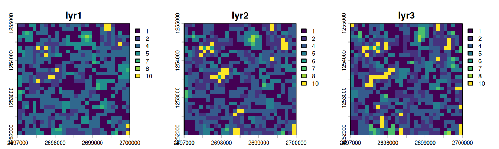
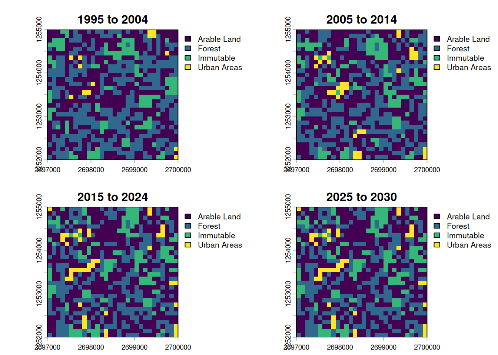

---
config:
flowchart:
useMaxWidth: true
---
flowchart TD
subgraph setup[1. Setup]
direction LR
domain_categories{{ fa:fa-table-list LULC Categorization}}
domain_space{{ fa:fa-globe Spatial Domain }}
domain_time{{ fa:fa-clock Temporal Domain}}
domain_categories --- domain_space
domain_space --- domain_time
end
setup --> preparation
subgraph preparation["2. Ingesting Data"]
direction LR
predictors@{shape : docs, label: "Spatiotemporal Predictors"}
lulc_data@{shape : doc, label: " LULC data \n @ {t, t-1, t-2, ...}"}
ts@{shape : brace, label: " Timesteps: \n t = now \n t-1 = one step in the past \n t+1 = one step in the future"}
style ts stroke:#ccc, stroke-width:2px
predictors --- lulc_data
lulc_data --- ts
end
preparation --> calibration
subgraph calibration["3. Calibration"]
direction LR
varsel[Select Features]
varsel --> markovmods
markovmods["Train Transition<br> Potential Models"]
markovmods --> parametrize_alloc
parametrize_alloc["Estimate Allocation Parameters"]
end
calibration --> estimation
subgraph estimation["4. Prediction + Allocation"]
direction LR
evalmodel["`Evaluate Transition Poten Models @ t`"]
predictions["Transition Potential Maps @ t+1"]
evalmodel --> predictions
changes["Allocate projected land use demand <br> (patch / expand)"]
predictions --> changes
end
estimation --> projection
projection@{shape : terminal, label: "LULC projection\n @ t+1"}
projection -->|Next iteration with t+1 as t| estimation
linkStyle 0,1,3,4 stroke-opacity:0
classDef phase fill:#f9f9f990,stroke:#333,stroke-dasharray:2 4,color:#000000
classDef data fill:#ddf1d5,stroke:#82b366,color:#000000
classDef user_input fill:#fff2cc,stroke:#d6b655,color:#000000
class setup,calibration,preparation,estimation,allocation phase
class predictors,lulc_data,projection data
class domain_categories,domain_space,domain_time user_input
Note: This tutorial expects that you already know about geodata and some central principles of pattern-based land use change modelling.
This file introduces the evoland-plus R package, or evoland for short. evoland-plus builds on the idea that land use change can be predicted from observed change patterns. The likelihood that a location and its neighbors will change state is called transition potential and is estimated per location. A concrete realization of all possible transitions (e.g. forest->grass, grass->forest, etc.) is realized in an allocation across all locations and classes. Because the transition potential is spatially and temporally autocorrelated, an extrapolation must be autoregressive.
Workflow
1 Setup
We’ll use the following packages:
1.1 Creating an evoland database
First, we load the package and create an evoland_db database object: unlike most R objects (e.g. data.frame), this is a mutable object1, meaning we can alter its state like we would with a Python object. This nicely mirrors our persistent database on disk.
If there is no directory at path, we’ll create a new DB: a set of parquet files following clearly defined parquet files. If there is a directory, we resume from where we left off.
db <- evoland_db$new(path = "firstmodel.evolanddb")Go ahead and print the d`` object. There are already aruns_tand areporting_t` table, which are bare-bones for now but will be used to track our modelling runs and metadata for producing graphs and tables.
db<evoland_db> Object. Inherits from <parquet_db>
| Database: firstmodel.evolanddb
| Write Options: format parquet, compression zstd
| Active Run: 0
| Lineage: 0
Tables Present:
reporting_t, runs_t
DB Methods:
column_max, commit, delete_from, execute, fetch, get_query, get_read_expr,
get_table_metadata, get_table_path, list_tables, row_count
Public Methods:
alloc_dinamica, create_alloc_params_t, eval_alloc_params_t, fit_full_models,
fit_partial_models, generate_neighbor_predictors, get_obs_trans_rates,
get_pruned_trans_preds_t, lulc_data_as_rast, pred_data_wide_v,
predict_trans_pot, set_full_trans_preds, set_neighbors, set_report,
trans_pred_data_v, trans_rates_dinamica_v, upsert_new_neighbors
Active Bindings:
coords_minimal, extent, id_run, lulc_meta_long_v, pred_sources_v, run_lineage,
trans_v1.2 Defining our model framework
Before we do anything else, let’s declare the framework of our model:
- Land Use / Cover Categories: A set of land use and/or land cover classes between which changes can occur
- Spatial Domain: A set of coordinates, built from a geographic specification
- Temporal Domain: A set of periods, describing a regular time series
1.2.1 LULC Categories
We define our fundamental LULC classes. The src_classes field maps the underlying data source’s classes to our conceptual categories.
db$lulc_meta_t <- create_lulc_meta_t(
list(
forest = list(
pretty_name = "Forest",
description = "Areas with lots of trees",
src_classes = 1:3
),
arable = list(
pretty_name = "Arable Land",
src_classes = c(4, 8)
),
urban = list(
pretty_name = "Urban Areas",
description = "Where nature goes to die",
src_classes = 5:7
),
static = list(
pretty_name = "Immutable",
description = "Areas where we cannot conceptualize change",
src_classes = 9:10
)
)
)1.2.2 Spatial domain
The spatial coordinate points provide the fundamental geographic domain on which our model will operate. We use a dense square raster, but since we register individual coordinate points, we could subset these to any oddly shaped region of interest.
# template SpatRaster: 30x30 grid in Swiss LV95, later used for synthetic data generation
template_rast <- terra::rast(
crs = "EPSG:2056",
extent = terra::ext(c(
xmin = 2697000,
xmax = 2700000,
ymin = 1252000,
ymax = 1255000
)),
resolution = 100
)
db$coords_t <- create_coords_t_square(
epsg = terra::crs(template_rast, describe = TRUE)$code |> as.integer(),
extent = terra::ext(template_rast),
resolution = terra::res(template_rast)[1]
)You can retrieve coords_t from disk and filter using data.table semantics:
db$coords_t[lon == 2699650]Coordinate Table
longitude (x) range: [2699650, 2699650]
latitude (y) range: [1252050, 1254950]
Key: <id_coord>
id_coord lon lat elevation geom_polygon
<int> <num> <num> <num> <list>
1: 27 2699650 1254950 NA [NULL]
2: 57 2699650 1254850 NA [NULL]
3: 87 2699650 1254750 NA [NULL]
4: 117 2699650 1254650 NA [NULL]
5: 147 2699650 1254550 NA [NULL]
---
26: 777 2699650 1252450 NA [NULL]
27: 807 2699650 1252350 NA [NULL]
28: 837 2699650 1252250 NA [NULL]
29: 867 2699650 1252150 NA [NULL]
30: 897 2699650 1252050 NA [NULL]We can also retrieve a minimal representation (id, lat, lon) using an active binding, i.e. a method tied to the database that dynamically computes a property when called:
db$coords_minimal[1:2]Key: <id_coord>
id_coord lon lat
<int> <num> <num>
1: 1 2697050 1254950
2: 2 2697150 12549501.2.3 Temporal domain
We also define our temporal domain. Note that an additional “0th” period is added at the end of the observed range; this is used for labelling predictor or intervention data as static.
db$periods_t <- create_periods_t(
period_length_str = "P10Y", # 10 year period
start_observed = "1995-01-01",
end_observed = "2020-01-01",
end_extrapolated = "2030-01-01"
)2 Ingesting Data
2.1 LULC Data
For this tutorial, we do not read real observed LULC data: instead, we generate a synthetic LULC raster with 3 layers (one per period) by adding autoregressive noise to a noisy raster.
# autoregressive noise with skellam distribution
n_cells <- dim(template_rast)[1] * dim(template_rast)[2]
noise1 <- runif(n_cells, min = 0, max = 10)
noise2 <- noise1 + stats::rpois(n_cells, 1) - stats::rpois(n_cells, 1)
noise3 <- noise2 + stats::rpois(n_cells, 1) - stats::rpois(n_cells, 1)
synthetic_lulc <-
rast(template_rast, nlyrs = 3, vals = c(noise1, noise2, noise3)) |>
focal(w = 3, fun = mean, na.rm = TRUE) |>
clamp(lower = 0, upper = 10) |>
classify(rcl = data.frame(from = 0:9, to = 1:10, becomes = sample(1:10, 10)))
plot(synthetic_lulc, nc = 3)
We now extract the generated values at our coordinates using extract_using_coords_t, giving us a tabular representation of id_coord, id_period, src_class tuples. In a second step, we join in a long representation of the LULC metadata, associating id_lulc with src_class.
synthetic_at_coords <- extract_using_coords_t(synthetic_lulc, db$coords_t)
synthetic_joint_meta <-
synthetic_at_coords[, .(
id_coord,
id_period = substr(layer, 4, 4) |> as.integer(),
src_class = value
)][
db$lulc_meta_long_v, # map from id_lulc to src_class
on = .(src_class),
nomatch = NULL
]We now have the LULC data in an almost canonical format. We need to add information on which id_run this data belongs to: run 0 is the base run, providing observed data (see db$runs_t for details). The call to as_lulc_data_t ensures that the data we want to insert actually conforms to the form we are expecting.
db$lulc_data_t <- as_lulc_data_t(synthetic_joint_meta[, .(
id_run = 0L, # Base run ID
id_period,
id_lulc,
id_coord
)])Now that we have LULC data in our DB, we can derive data from it, e.g. we grab a view where a transition occurred, i.e. the anterior and posterior LULC ID are not the same.
db$trans_v[id_lulc_anterior != id_lulc_posterior] id_period id_lulc_anterior id_lulc_posterior id_coord
<int> <int> <int> <int>
1: 3 1 4 1
2: 2 1 2 3
3: 3 2 1 3
4: 2 3 1 4
5: 3 1 3 4
---
635: 2 2 1 894
636: 2 1 2 895
637: 3 2 1 895
638: 3 3 2 897
639: 3 1 2 8992.2 Add Predictors and Neighbors
You have seen above how extract_using_coords_t can be used to transform a SpatRaster into a tabular form. It can also be used with SpatVector objects, and the resulting tables need not just be LULC data: we could also use it to extract predictor information. For demo purposes, we’ll use test data that comes with evoland. Note that the metadata holds a fill_value used to define what value should be used at a coordinate point with no explicit data set - e.g. if a square kilometre does not have a population count set, we can infer that it should be zero.
db$pred_meta_t <- evoland:::test_pred_meta_t
db$pred_data_t <- evoland:::test_pred_data_tStatistical models like GLMs or random forests lack inherent spatial concepts, so we explicitly calculate neighborhood relations for each coordinate to create spatial predictors (e.g., “number of neighboring forest cells within 100m”). This is done by creating a neighbor lookup table (db$set_neighbors and then counting the number of neighbors within each distance break class and land use category (db$generate_neighbor_predictors).
db$set_neighbors(
max_distance = 1000,
distance_breaks = c(0, 100, 500, 1000),
quiet = TRUE
)
db$generate_neighbor_predictors()Messages
Computed 208360 neighbor relationships Appended 8 neighbor predictor variables with 20031 data points
Have a look at the predictor metadata we have defined, it now contains new rows for the neighbor predictors:
db$pred_meta_tPredictor Metadata Table
Number of predictors: 12
Key: <name>
id_pred name
<int> <char>
1: 1 elevation
2: 10 id_lulc_1_dist_[100,500)
3: 6 id_lulc_1_dist_[500,1e+03]
4: 9 id_lulc_2_dist_[100,500)
5: 5 id_lulc_2_dist_[500,1e+03]
6: 12 id_lulc_3_dist_[100,500)
7: 8 id_lulc_3_dist_[500,1e+03]
8: 11 id_lulc_4_dist_[100,500)
9: 7 id_lulc_4_dist_[500,1e+03]
10: 3 is_protected
11: 2 population
12: 4 soil_type
8 variables not shown: [pretty_name <char>, description <char>, orig_format <char>, sources <list>, unit <char>, factor_levels <list>, data_type <fctr>, fill_value <lgcl>]3 Calibration
3.1 Eligible Transitions and Predictor Pruning
We filter transitions eligible for modeling based on a minimum number of observed occurrences.
db$trans_meta_t <- create_trans_meta_t(db$trans_v, min_cardinality_abs = 50)Because each transition may be modelled using different predictors (aka features), we start out by setting the trans_preds_t table to the full cross product of viable transitions and predictors. We then carry out a feature selection step in get_pruned_trans_preds_t, which here is used with a two-stage covariance filter. First, candidate features are ranked and then selected up to a given correlation threshold, see covariance_filter. The assignment to db$trans_preds_t will overwrite the existing relations; you will be prompted if you want to do this if you’re running R interactively.
db$set_full_trans_preds()
# Note: we're suppressing warnings about non-convergence due to our random synthetic data.
db$trans_preds_t <- db$get_pruned_trans_preds_t(
filter_fun = covariance_filter,
corcut = 0.1
)3.2 Transition Models
Now we fit partial models using training/validation splits, allowing for a goodness-of-fit (gof) estimation. Here, we only fit a single partial model per transition, where we normally would create a list of candidates. We can then pick the models with the best goodness of fit to retrain full models on all of the available predictor data; the full models are then used during extrapolation.
db$trans_models_t <- db$fit_partial_models(
fit_fun = fit_glm,
gof_fun = gof_glm,
sample_frac = 0.7,
seed = 42
)
db$trans_models_t <- db$fit_full_models(
gof_criterion = "auc",
gof_maximize = TRUE
)Messages
Fitting partial models for 4 transitions... Fitting full models for 4 transitions...
3.3 Transition Rates and Allocation Parameters
As a constrained pattern-based model, we need to provide transition rates to the DinamicaEGO allocator. In a simple approach, we can extrapolate the rate of each transition from the observed data:
db$trans_rates_t <-
db$get_obs_trans_rates() |>
extrapolate_trans_rates(
periods = db$periods_t,
coord_count = n_cells
)We estimate allocation parameters for DinamicaEGO, which determine the shape and size of new patches, respectively which fraction of converted land use is in new versus expanded patches. This estimation procedure is not unbiased and hence a single estimate may not be enough: normally, we would perturb the estimate and use multiple id_runs to identify the best parametrization. For simplicity, we now just take the estimates for granted and assign id_run=0, i.e. the base run ID.
alloc_for_eval <- db$create_alloc_params_t(n_perturbations = 0)
alloc_for_eval[, id_run := 0L] # overwrite id_run=1
db$alloc_params_t <- alloc_for_evalMessages
Computing allocation parameters for 4 transitions across 2 periods... Processing period 1 -> 2 Processing period 2 -> 3 Aggregating parameters across periods... Creating 0 randomly perturbed versions per transition... Successfully computed 4 allocation parameter sets (4 transitions x (0 perturbations + best estimate))
4 Prediction + Allocation
With all components in place, we run the allocation step. If Dinamica is not installed, you’ll get a warning that the anterior LULC map is returned as the posterior. For installation instructions, see the Installing Dinamica EGO vignette.
db$alloc_dinamica(
id_period = db$periods_t[is_extrapolated == TRUE, id_period],
gof_criterion = "auc",
gof_maximize = TRUE
)Warning in run_alloc_dinamica(work_dir = iteration_dir, echo = FALSE,
write_logfile = TRUE): DinamicaConsole not found on PATH; Copying anterior.tif
to posterior.tif as fallback so we can test.Messages
Starting Dinamica allocation simulation Periods: 4 Run: 0 Work directory: dinamica_rundir/run_0 Loading origin period 4 from lulc_data_t... === Iteration 1/0 === Running Dinamica allocation: period 3 -> 4 Wrote transition rates to trans_rates.csv Wrote expansion table to expansion_table.csv Wrote patcher table to patcher_table.csv Wrote anterior LULC to anterior.tif Writing probability maps... Predicting transition potential for 4 transitions Predicting trans 1/4 (id_trans 2) Predicting trans 2/4 (id_trans 5) Predicting trans 3/4 (id_trans 3) Predicting trans 4/4 (id_trans 4) Executing Dinamica EGO... Converting posterior raster to lulc_data_t... Extracted 900 cells Iteration 1 complete Simulation complete! Results written to: lulc_data_t Cleaning up intermediate files...
4.1 Visualization
Finally, we can extract the simulated LULC maps into SpatRaster objects to visualize them.
labels <- db$periods_t[
id_period != 0,
paste0(year(start_date), " to ", year(end_date))
]
plot_maps <- db$lulc_data_as_rast() |> setNames(labels)
plot(plot_maps, type = "classes", levels = db$lulc_meta_t$pretty_name)
Of the four maps, only the first three show changes. Due to Dinamica not being available on our github runner, the extrapolated step should look exactly like the step before.